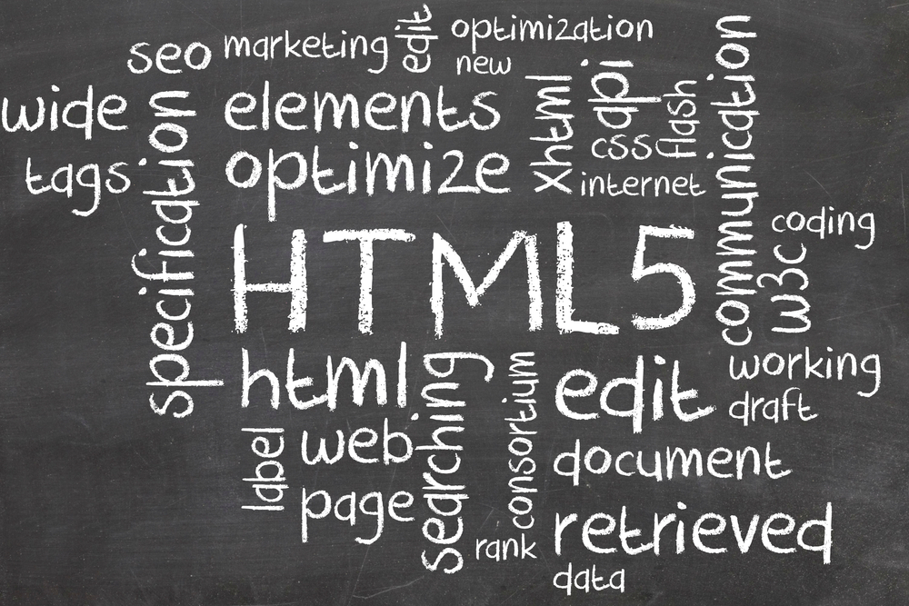

HTML5 is a core technology markup language of the Internet
used for structuring and presenting content for the World Wide Web.
As of October 2014 this is the final and complete fifth revision of
the HTML standard of the World Wide Web Consortium (W3C).
The previous version, HTML 4, was standardised in 1997.

Its core aims have been to improve the language with support for
the latest multimedia while keeping it easily readable by humans and
consistently understood by computers and devices (web browsers, parsers, etc.).
HTML5 is intended to subsume not only HTML 4, but also XHTML 1 and DOM Level 2 HTML.
XHTML5 (XML-serialized HTML5)
XML documents must be served with an XML Internet media type (often called "MIME type")
such as application/xhtml+xml or application/xml, and must conform to strict,
well-formed syntax of XML. XHTML5 is simply an XML-serialized HTML5 data
(e.g. not having any unclosed tags), sent with one of XML media types.
HTML that has been written to conform to both the HTML and XHTML specifications —
and which will therefore produce the same DOM tree whether parsed as HTML or XML — is termed "polyglot markup".
Logo: The W3C HTML5 logo
On 18 January 2011, the W3C introduced a logo to represent the use of or interest in HTML5.
Unlike other badges previously issued by the W3C, it does not imply validity or conformance to a certain standard.
As of 1 April 2011, this logo is official.
When initially presenting it to the public, the W3C announced the HTML5 logo as a
"general-purpose visual identity for a broad set of open web technologies, including HTML5, CSS,
SVG, WOFF, and others". Some web standard advocates, including The Web Standards Project,
criticised that definition of "HTML5" as an umbrella term, pointing out the blurring of terminology
and the potential for miscommunication.
Three days later, the W3C responded to community feedback and changed the logo's definition,
dropping the enumeration of related technologies.[74] The W3C then said the logo
"represents HTML5, the cornerstone for modern Web applications".